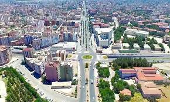

Yuvarlak görüntüler oluşturmak için border-radius özelliğini kullanın:
Daire içine alınmış görüntüler oluşturmak için border-radius özelliğini kullanın:
Küçük resimler oluşturmak için border özelliğini kullanın:
Küçük resimler oluşturmak için border özelliğini kullanın. Bağlantı olarak kullanmak için görüntünün etrafına bir çapa sarın.
Efekti görmek için resmin üzerine gelin ve üzerine tıklayın.
Duyarlı görüntüler ekranın boyutuna uyacak şekilde otomatik olarak ayarlanır.
Efekti görmek için tarayıcı penceresini yeniden boyutlandırın:
Bir görüntüyü ortalamak için sol ve sağ kenar boşluğunu otomatik olarak ayarlayın ve onu bir blok öğesi haline getirin.